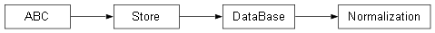

rc.data.models§
Models for data storage.
Classes§
The familiar user format of |
|
The internal format of |
|
Normalization of a Repo. |
|
A Repository of data and models. Informally a dataset and all the things we'd like to do to it. |
Module Contents§
- class DesignMatrix(path, data=None, **options)[source]§
Bases:
rc.base.TableThe familiar user format of
DesignMatrixwhich is fat (has many columns).- Parameters:
path (Store)
data (rc.base.definitions.Self | rc.base.definitions.Pd.DataFrame | None)
options (rc.base.definitions.Any)
- Label§
Class attribute aliasing acceptable Types for column (or index) labels.
- skeleton: rc.base.Pd.DataFrame§
DataFrame of the minimal, skeleton
DesignMatrix.
- defaultOptions: rc.base.MetaData§
Default file handling
DesignMatrix.Options().
- classmethod create(path, src, columns_in_l='')[source]§
Reformat the
NormalDesignMatrixinsrcas aSelf(DesignMatrix).- Parameters:
path (rc.base.Store.Path) – The
Pathto store theDesignMatrixcreated, overwritten if existing.src (NormalDesignMatrix) – The
NormalDesignMatrixto reformat.columns_in_l (Label)
- Return type:
rc.base.Self
Returns: The
NormalDesignMatrixcreated atdst.
- classmethod copy(src, dst='')[source]§
Reformat this
DesignMatrixto aNormalDesignMatrix.- Parameters:
src (rc.base.Self) – The
DesignMatrixto reformat.dst (rc.base.Store.Path) – Optional
Pathto theNormalDesignMatrix. Defaults to'', which overwritessrc.
- Return type:
Returns: The
NormalDesignMatrixcreated atdst.
- class NormalDesignMatrix(path, data=None, **options)[source]§
Bases:
DesignMatrixThe internal format of
DesignMatrix, which is thin (has few columns).- Parameters:
path (Store)
data (rc.base.definitions.Self | rc.base.definitions.Pd.DataFrame | None)
options (rc.base.definitions.Any)
- create(path, src)[source]§
Reformat the
NormalDesignMatrixinsrcas aSelf(DesignMatrix).- Parameters:
path (rc.base.Store.Path) – The
Pathto store theDesignMatrixcreated, overwritten if existing.src (NormalDesignMatrix) – The
NormalDesignMatrixto reformat.
- Return type:
rc.base.Self
Returns: The
NormalDesignMatrixcreated atdst.
- copy(src, dst='')[source]§
Reformat this
DesignMatrixto aNormalDesignMatrix.- Parameters:
src (rc.base.Self) – The
DesignMatrixto reformat.dst (rc.base.Store.Path) – Optional
Pathto theNormalDesignMatrix. Defaults to'', which overwritessrc.
- Return type:
Returns: The
NormalDesignMatrixcreated atdst.
- class Normalization(path, **tables)[source]§
Bases:
rc.base.DataBase
Normalization of a Repo.
- Parameters:
path (rc.base.Store.Path)
tables (rc.base.Table | PD.DataFrame)
- options: Normalization.NamedTables[rc.base.MetaData]§
Class attribute of the form
NamedTables(**{names[i]: options[i], ...}). Override as necessary for bespokeTable.options. Elements ofoptions[i]found inTable.writeOptionspopulateself[i].options.write, the remainder populateself[i].options.read.
- __call__(**meta)[source]§
Optimize and update
self.- Parameters:
**meta (rc.base.Any) – Optimization
MetaData.- Return type:
rc.base.Self
Returns:
self
- classmethod create(path, data, **meta)[source]§
Create a
Normalizationinpath.- Parameters:
path (rc.base.Store.Path) – The folder to store the
Normalizationin. Need not exist, any existingTableswill be overwritten if it does.**meta (rc.base.Any) – Optimization
MetaData.data (DesignMatrix)
**meta
- Return type:
rc.base.Self
Returns: The
Normalizationcreated.
- class Repo(path, **tables)[source]§
Bases:
rc.base.DataBaseA Repository of data and models. Informally a dataset and all the things we’d like to do to it.
- options: Repo.NamedTables[rc.base.MetaData]§
Class attribute of the form
NamedTables(**{names[i]: options[i], ...}). Override as necessary for bespokeTable.options. Elements ofoptions[i]found inTable.writeOptionspopulateself[i].options.write, the remainder populateself[i].options.read.
- property fold§
The current fold.
- __getitem__(fold)[source]§
Indexer returns the
Path(s) to the Folds indexed or sliced byfold.- Parameters:
fold (int | slice)
- Return type:
rc.base.Path | rc.base.Tuple[rc.base.Path, Ellipsis]